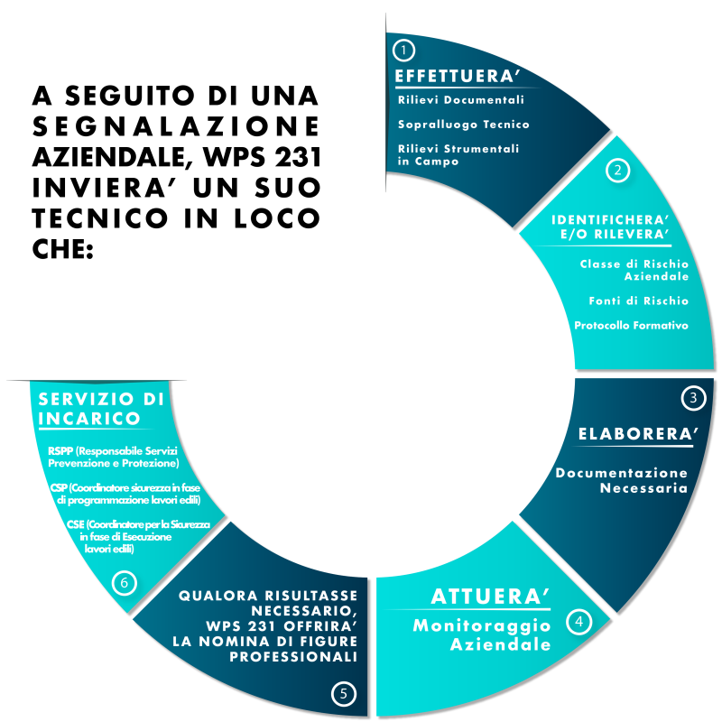

Comparto Tecnico
A seguito di una segnalazione aziendale, WPS 231 invia in loco un suo tecnico che
-
EFFETTUA:
- RILIEVI DOCUMENTALI: il tecnico, in loco, verifica tutta la documentazione tecnica obbligatoria come ad esempio l’agibilità dei locali, la dichiarazione di conformità dell’impianto elettrico e le relative denunce ed i corsi di formazione precedentemente effettuati;
- SOPRALLUOGO TECNICO: è una visita dei luoghi di lavoro da effettuare durante lo svolgimento dell’attività lavorativa finalizzata alla valutazione dei rischi aziendali effettivamente presenti;
- RILIEVI STRUMENTALI IN CAMPO: il tecnico, a seconda di quanto previsto dalla normativa vigente e dei rischi realmente rilevati, effettua le misurazioni con appostiti strumenti quali ad esempio il fonometro per il rischio rumore e l’accelerometro per le vibrazioni, etc.
-
IDENTIFICA E/O STABILISCE:
- CLASSE DI RISCHIO AZIENDALE: il tecnico identifica la classe di rischio in base alla documentazione visionata ed al sopralluogo effettuato;
- FONTI DI RISCHIO: sono determinate dallo stesso processo lavorativo e dall’attività svolta dai dipendenti;
- PROTOCOLLO FORMATIVO: si identificano a seconda della tipologia aziendale e dalle mansioni svolte dai dipendenti, i corsi di formazione necessari.
-
ELABORA:
- DOCUMENTAZIONE TECNICA: vengono redatti una serie di documenti tecnici quali ad esempio il DVR (Documento di Valutazione dei Rischi), il PEI (Piano di Emergenza Interno), Piano Operativo di Sicurezza (POS), Piano di Montaggio, uso e smontaggio ponteggi (PIMUS), Piano di sicurezza e Coordinamento (PSC). WPS 231 offre, inoltre, l’elaborazione di Documentazione Accessoria per la regolamentazione interna della consegna dei DPI (Dispositivi di Protezione Individuale), Nomine ed Incarichi di sicurezza, etc.
-
ATTUA:
- MONITORAGGIO AZIENDALE: il tecnico incaricato realizza un cronoprogramma di verifica e supporto nel tempo che garantisce una maggiore tutela dell’azienda stessa. (Es.: affiancamento in caso di ispezione).
Se necessario WPS 231 offre alle aziende la nomina di figure professionali specializzate nel settore quali ad es. RSPP, CSP, CSE, etc. e mette a disposizione consulenti che possano espletare varie tipologie di pratiche spaziando dal settore antincendio all’ambiente.
